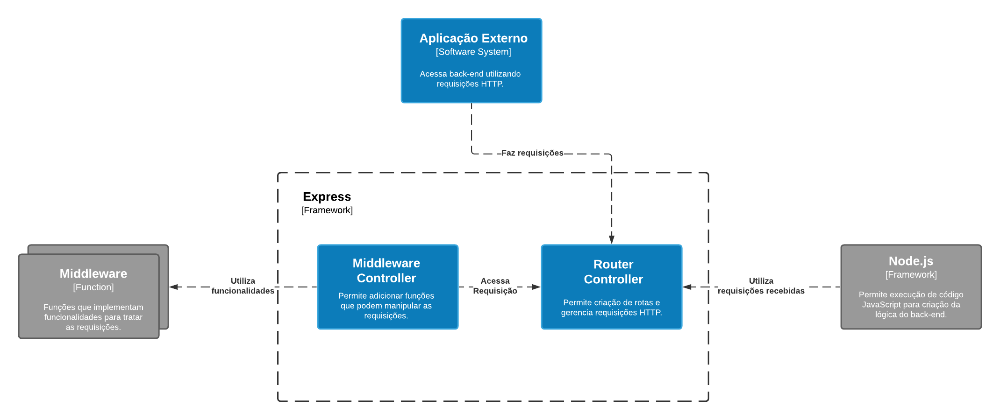
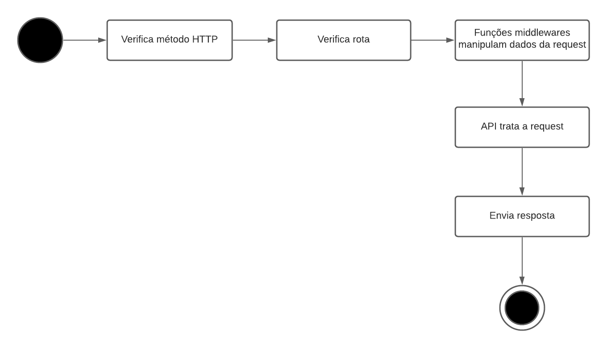

Documentação Arquitetural do Express
Autores
Este documento foi produzido por Arthur de Lima Ferrão.
- Matrícula: 117110318
- Contato: arthur.ferrao@ccc.ufcg.edu.br
- Projeto documentado: https://github.com/expressjs/express
Descrição Arquitetural – Express
Este documento descreve a arquitetura do projeto Express. Essa descrição foi baseada principalmente no modelo C4.
Descrição Geral sobre o Express
O Express é um framework de código aberto, utilizado em conjunto com o Node.js, tem objetivo de prover o ferramental necessário para a criação de servidores web, de maneira simples e robusta.
Objetivos
Oferecer um ferramental robusto, em conjunto do Node.js, para desenvolvimento de aplicações back-end de forma simples, permitindo a criação de rotas para comunição via requisições HTTP.
Contexto
O Express é responsável por criar as rotas e gerenciar as requisições feitas para o sistema back-end, ele vai permitir que sistemas externos possam fazer requisições HTTP para a API. Além disso o Express é usado em conjunto com o Node.js, que vai ser responsável pela codificação do sistema back-end.
Também é possivel integrar middlewares que irão ser utilizados pelo Express para adicionar funcionalidades e facilitar o desenvolvimento da aplicação back-end. Podemos encontrar alguns middlewares desenvolvidos pela própria equipe do Express na organização expressjs.
Abaixo podemos ver o diagrama de contexto que ilustra a comunicação dessas entidades com o Express.

Containers
Como o Express é um framework utilizado para implementar uma aplicação back-end ele não pode ser dividido em diferentes sistemas de software e, por ser um sistema único, é representado apenas por um container.
Algumas das funcionalidades do Express podem ser vistas abaixo:
Configurando o Express
const express = require('express')
const app = express()
Métodos de Roteamento
// GET method route
app.get('/', function (req, res) {
res.send('GET request')
})
// POST method route
app.post('/', function (req, res) {
res.send('POST request')
})
Adicionando função middleware
app.use(function (req, res, next) {
console.log('Do something')
next()
})
Para mais detalhes sobre as funcionalidades do Express leia a documentação.
Componentes
Podemos dividir o Express em dois componentes:
Router Controller: permite criar rotas e gerenciar as requisições HTTP rescebidas pela API.
Middleware Controller: permite adicionar funções que podem ter acesso aos objetos de responde e request das requisições recebidas pela API.
Abaixo podemos ver o diagrama que ilustra a distribuição desses componentes no Express.

Código
Nesta etapa não faremos diagramas que apresentam detalhes da implementação. Faremos isso mais adiante.
Visão de Informação
Para essa etapa vamos focar em demonstrar desde a chegada de uma request na API até ela ser respondida por meio do Express.
Abaixo podemos ver o diagrama que ilustra os estados de uma request.

Contribuições Concretas
É necessário traduzir esta documentação para inglês e por esse motivo ainda não foram abertas PRs para o repositório do Express.